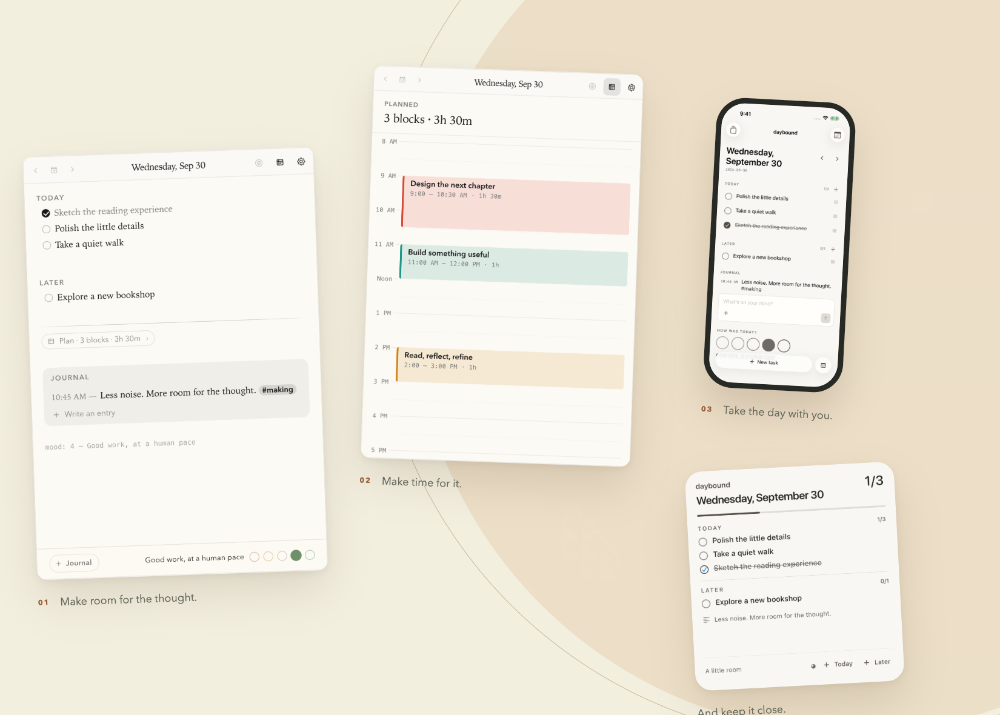
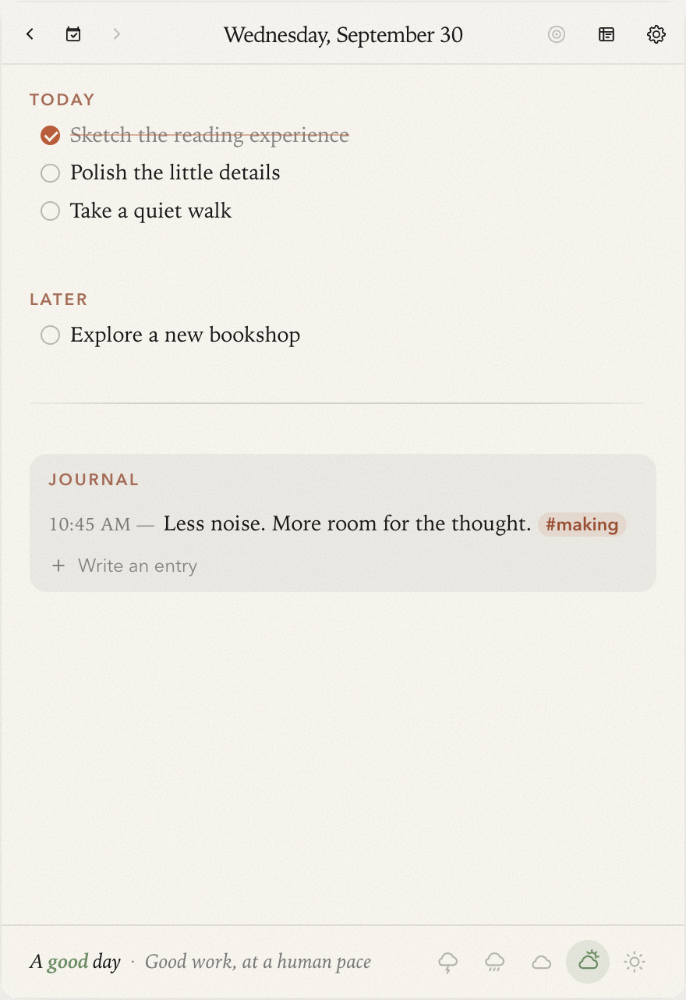
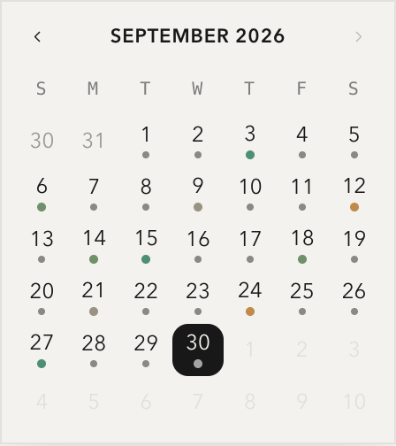
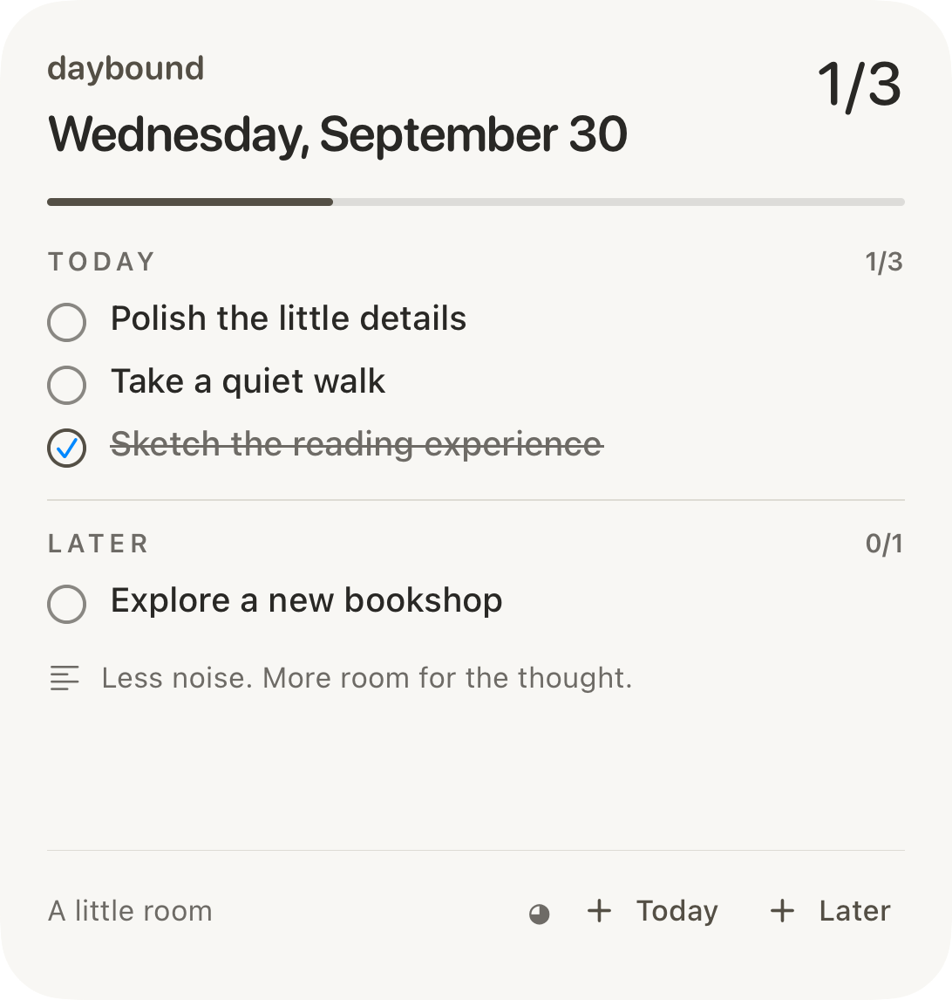
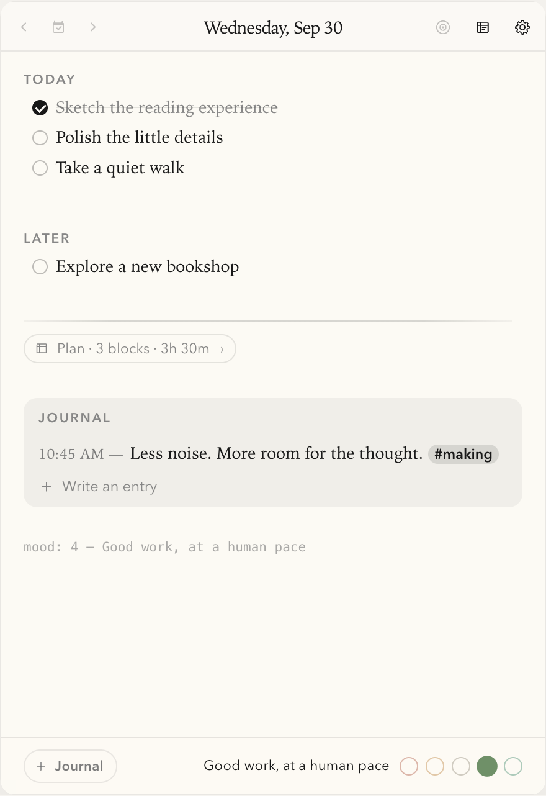

Time you can touch.
Draw a block, move it, resize it. Task names bring their own colors and little icons; free time stays visible between them.
A notebook, close at hand
A little structure for the things you want to do. A little room for the things you want to say.
Mac · iPhone · Home Screen / Designed & built by Dhiraj

Less managing your life.
More living your day.
01 / At your desk
Open the menubar. Write the thought. Return to your day. Tasks, time blocks, and your journal share one quietly editable page.
Illustrated readout · Rust keeps the native title ticking while the webview sleeps.
Meet the new day planner ↗
Actual app components. Fictional notes. The recording uses an isolated browser preview of the Mac UI.

A month of little moments
Pick a date and return to that day’s note. A dot marks a page you’ve written; its color holds a little memory of your mood.
Today has room for the next thought. Yesterday stays exactly where you left it.
Pick a date to open its page ↗Interactive calendar illustration, with fictional notes and mood data.
Try checking a task or writing a line. Your demo edits stay here until you reload.
A plan that can change with you
A calendar tells you what was supposed to happen. Daybound gives you a small, thoughtful way to decide what happens next.
Current Mac UI, captured from its isolated component preview. Click to inspect.
Draw a block, move it, resize it. Task names bring their own colors and little icons; free time stays visible between them.
Push a block forward, preview the affected plan, or create a follow-up session. Changes have an undo path; reviewed work keeps its history.
Choose reminders before a block or at its start. Record Done, Partly, or Skipped when the moment has passed. These choices live with the plan in Markdown.
02 / Away from your desk
A thought on the train. A task before coffee. Your iPhone opens the same daily files, with a native interface made for the small moments.
The same five themes, a native visual planner, rich task links, and a journal that feels at home on your phone.
Native iPhone Simulator captures. Fictional content.

The widget uses a snapshot refreshed by the iPhone app. Mac edits appear after the phone reloads the file.
03 / Always yours
Close the app and the day is still there. Open it in another editor. Put it in your own folder. Keep it for years.
TODAY
☑ Sketch the first idea
○ Make the small version work
PLAN
9:00 – 10:30 Design the next chapter
JOURNAL
10:45 AM — A little less noise. A little more focus. #making
mood: 4 — A good start## Today
- [x] Sketch the first idea
- [ ] Make the small version work
## Plan
9:00 – 10:30 Design the next chapter
## Journal
10:45 AM — A little less noise. A little more focus. #making
mood: 4 — A good startAn illustration of the format, not another app screen. One document behind every view.
No separate database. Just daily Markdown files and a goals page in folders you choose.
Your folder, your sync. Choose an iCloud Drive folder on both devices. Permissions are granted separately; iCloud controls delivery timing.
04 / Your kind of quiet
Five themes on Mac and iPhone, each with light and dark appearances. Every calendar, checkbox, and journal card takes its cues from the same palette.
Warm paper. Iowan Old Style. Room to breathe.

05 / A little hands-on
Check a task, leave a thought, change the mood, or explore a simple plan. This standalone interactive illustration uses fictional data in memory. The actual app appears in the screenshots and recording; its implementation stays private.
For the people who build things
I wanted a notebook that felt small without making the engineering careless. The hard part was making three native surfaces agree on one ordinary text file.
Inside the Mac
The live-preview editor and visual timeline operate on the same Markdown string. Syntax decorations reveal the active line; plan gestures become document rewrites. Rust owns file access, the native menubar clock, and reminders.
A shared TypeScript engine parses and rewrites notes. Mac imports it directly; iPhone calls its bundled form through JavaScriptCore. The journal, tasks, and plan follow the same document rules.
The hidden Mac webview can sleep. A Rust thread keeps the native menubar title current, while the operating system schedules local reminders on both platforms.
Minimal document diffs preserve the editor selection during programmatic rewrites. iPhone checks for changed files before saving, offering a conflict choice instead of silently overwriting a newer note.
Outcomes, reminder overrides, and follow-up sessions are part of the document model. Move previews protect reviewed blocks; undo is scoped to the note and notebook that produced it.
Widgets use a derived app-group snapshot, timed entries, and App Intents to change modes. They do not pretend to read live iCloud changes: the phone must reload notes edited elsewhere.
Document checks cover parsing and rewrites. Headless browser checks exercise real task editing and snapped timeline drags. Native reminder checks cover scheduling; device delivery remains a separate validation.
An independent project by Dhiraj
Product design, cross-platform implementation, and the details that make a daily tool feel good to use.
What this project demonstrates
Taking a simple menubar notebook and evolving it into a coherent Mac, iPhone, and widget experience—without turning the document into a proprietary format.
Explore the public case study ↗App source stays private. This repository contains the presentation website, approved media, and engineering notes.
Daybound began as a personal fork of Daily by hellorashid. That menubar notebook is its foundation; the planning, journaling, shared document engine, native iPhone companion, and widget experience are its subsequent evolution.
Under active development. No public binary download or App Store distribution is offered here. Screenshots use fictional notes. Mac imagery comes from a component preview; iPhone imagery comes from Simulator; widgets are native layout renders. iCloud delivery and notification visibility depend on system settings.